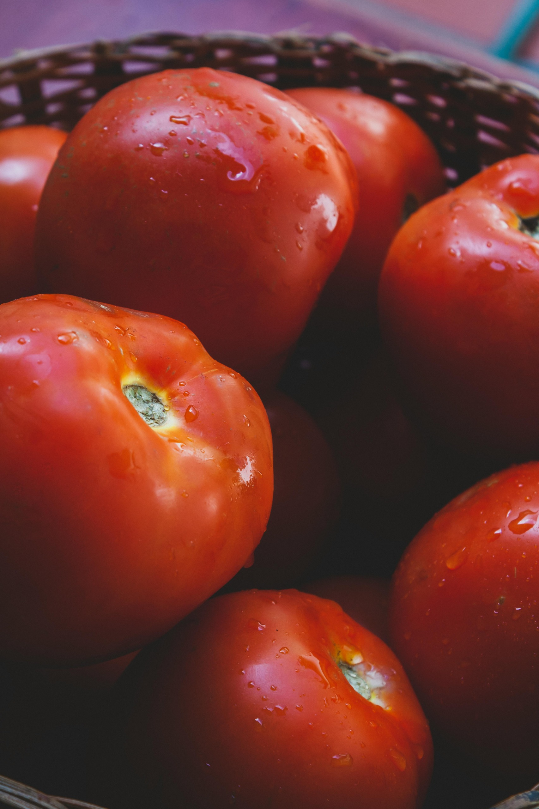
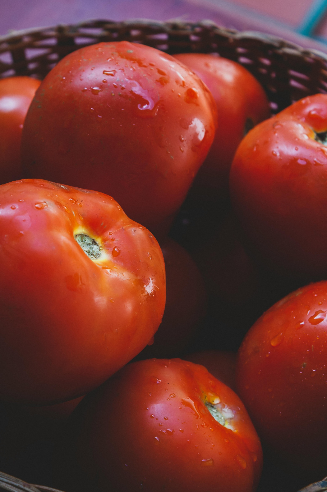

FUNDACIÓN PARA EL DESARROLLO ENDÓGENO COMUNAL AGROALIMENTARIO FUNDECA
"YERBA CARACAS"
La Fundación para el Desarrollo Endógeno Comunal Agroalimentario Fundeca - Yerba Caracas, creada con el objeto de garantizar el desarrollo del sistema de almacenamiento y distribución de alimentos estratégicos del Distrito Capital, en condiciones normales y de contingencia, así como proveer los despachos de alimentos necesarios para satisfacer los requerimientos alimenticios de los beneficiarios del Programa Social de Alimentación, que abriga a niños, niñas y adolescentes, adultos mayores, personas vulnerables y sectores priorizados como el Cuerpo de Bomberos de Caracas, Protección Civil, la Policía Administrativa, Fundasalud, Corporación de los Servicios Municipales, entre otros.
Nos encargamos de distribuir y garantizar el acceso a alimentos estratégicos, además de abastecer a instituciones públicas, hospitales y casas hogares. Todo esto promoviendo un modelo de alimentación sostenible, eficiente y respetuoso con el ambiente.
Dentro de nuestros proyectos más importantes destacan la planta potabilizadora Aguas Vivas, abierta al público para garantizar el acceso a agua potable; la Hacienda Merecure, dedicada a la producción agroalimentaria; y las Ferias Cielo Abierto, que ofrecen alimentos a precios asequibles para todas las comunidades del Distrito Capital.
La fundación mantiene un firme compromiso con el bienestar de quienes más lo necesitan, brindando apoyo alimentario constante a diversos sectores vulnerables del Distrito Capital.
Entre sus principales acciones destacan la atención a pacientes que reciben tratamiento en el Hospital Oncológico Luis Razetti, cuerpos de seguridad externa, personas privadas de libertad, y ciudadanos en condición de permanencia en calle. También se brinda respaldo solidario a casas hogares, cuerpos de bomberos y fundaciones dedicadas a niños, niñas y adolescentes.
Actualmente, se atienden 25 sedes de bomberos, beneficiando a más de 1.600 funcionarios que día a día protegen a la ciudadanía. Además, se brinda alimentación a 3 casas hogares, que acogen a una plantilla de más de 600 abuelos, y se acompaña a más de 11 sedes de fundaciones infantiles, fortaleciendo la atención integral a niños, niñas y adolescentes.
Cada plato servido representa más que alimento: es una muestra de solidaridad, respeto y compromiso con la vida. La fundación sigue trabajando con el corazón, sembrando esperanza en cada rincón donde hace falta.
 
